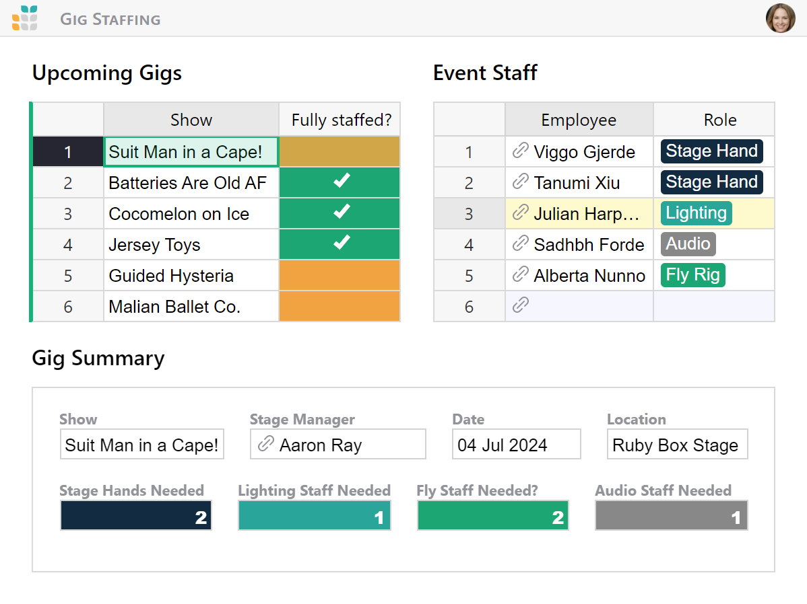
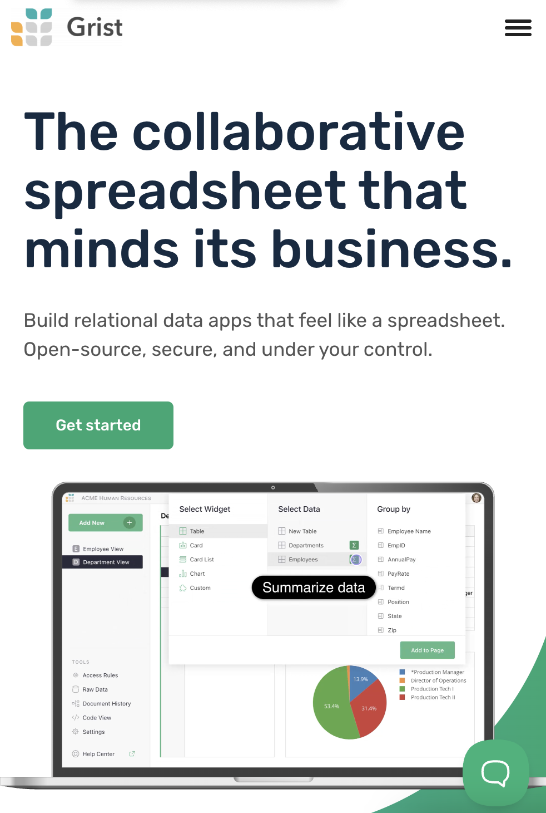
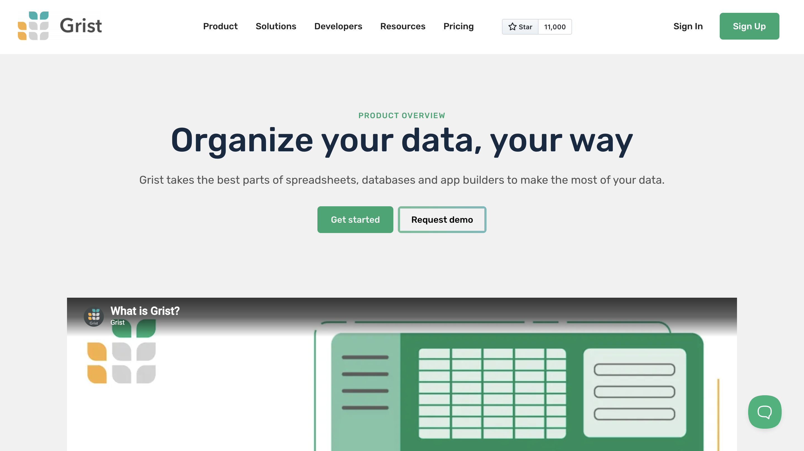

Grist Labs
Custom development, content syndication, and Parse.ly

Overview
Founded in 1999, Grist is a nonprofit, independent media organization that uses the power of journalism to engage the public about climate change and climate solutions. They are committed to the stories, the ideas, and the people who are making a sustainable future a reality.
Grist was looking for a reliable partner who would take care of their web stack so they could free up their editorial team and focus on what they do best — tell engaging stories that matter. They chose us.


Codebase optimization: A faster website with faster publishing
Understanding the importance of a solid foundation, began with a first things first approach. While visually appealing, Grist’s website suffered from a bloated codebase and a confusing backend that was put together by multiple different teams and freelancers. This slowed down both the website and the editorial team. Optimized the codebase and streamlined the backend, resulting in a faster website speed and improved editorial workflow from the get-go.
Custom development: Empowering Grist’s storytelling
Beyond text, Grist captivates readers with visually stunning storytelling that sets them apart from other non-profit publications. Each story is crafted using one of the many custom content blocks developed by us. Due to the sheer variety of content blocks available, editors have unlimited ways to tell a story. we also provided other useful blocks such as in-content donation blocks, newsletter subscription blocks, different header strips and more. To increase readers’ convenience, us added the functionality to listen to stories as well as download them in PDF format.
Custom WordPress dashboards
Leveraging the flexibility of WordPress, we created a custom screen that allows easy access to sitewide settings. The sitewide settings screen allows the Grist team to easily modify ever present elements such as the Appeals Bar, mobile-specific options, change donation amounts for different blocks and other settings critical to every non-profit newsroom.
Managed WordPress services: Free up time, focus on what matters
As Grist’s engineering partner, we manages their web stack to make sure the website is fast, secure and always up to date. This includes managing WordPress core updates, handling plugin updates to make sure nothing breaks, addressing any vulnerabilities and monitoring website security. This enables Grist’s publishing team to concentrate on their work and provide visitors with a great user experience, while we provides ongoing day-to-day support.

~4 years of successful partnership
The we and Grist partnership is ~4 years old and still going strong. With day-to-day WordPress management and on-demand engineering from us, the Grist team can rest assured about their web infrastructure, free to unleash their creative vision and focus on what they do best — telling climate stories that matter.